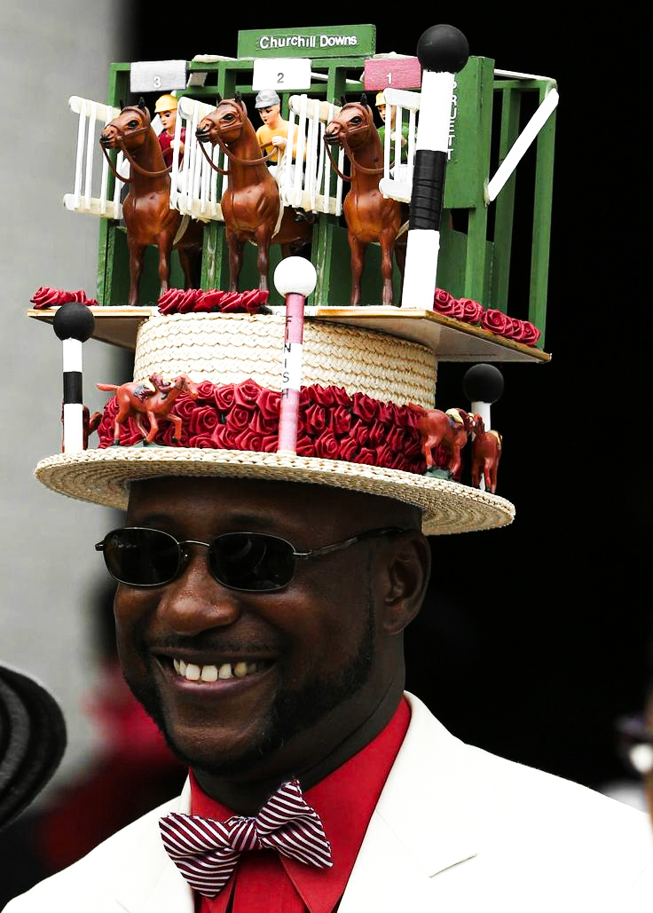
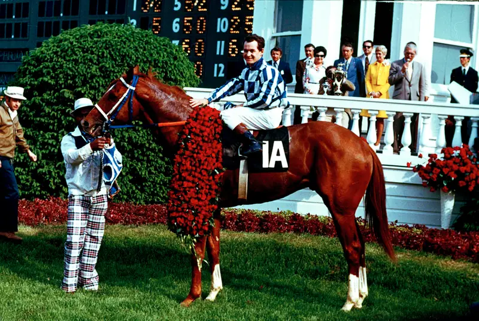
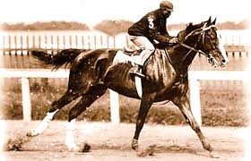
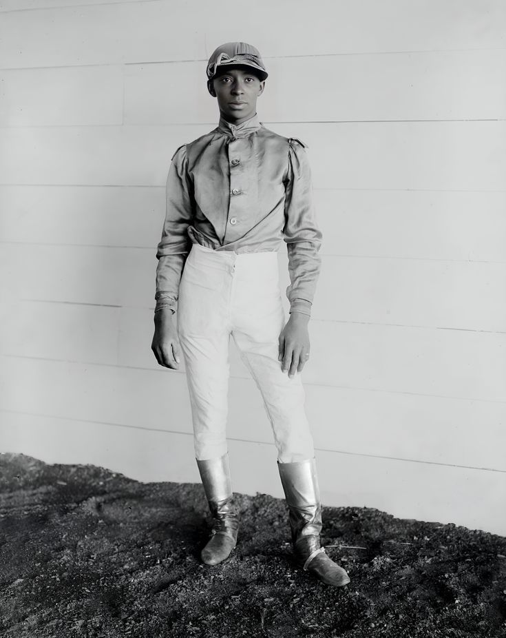
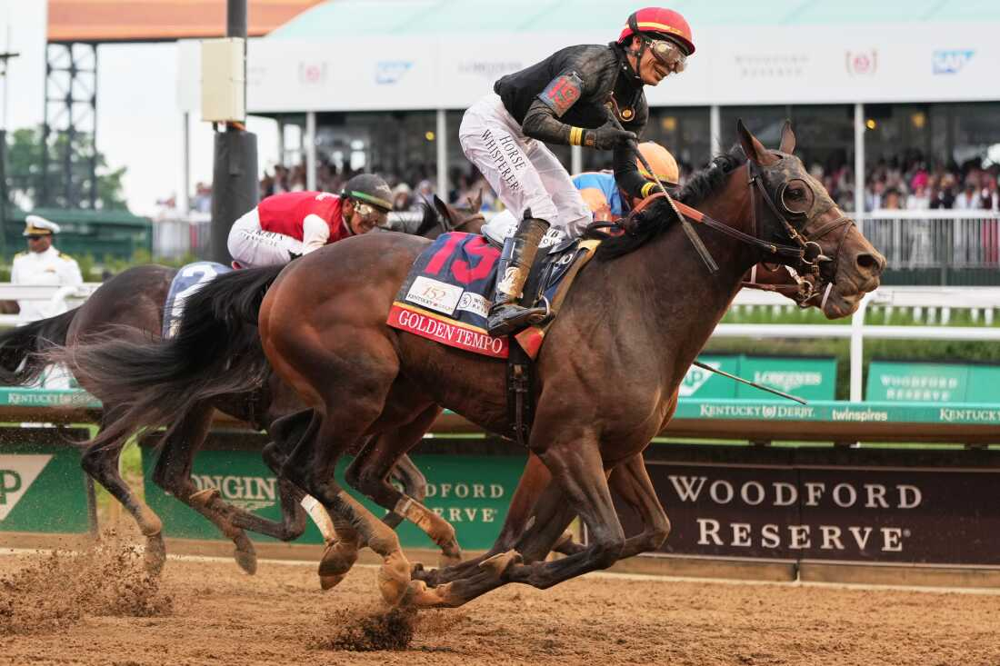

Tuesday, May 5, 2026
Before the hat is pinned and the mint julep is poured, there stands a horse. That is where this story begins, and if the Derby gets it right, where it ends, too. The Kentucky Derby exists in layers: heritage and spectacle, sport and image. It is a two-minute race wrapped in a century of performance. It is as much about what is worn as what is won, where dress becomes language and arrival becomes part of the event itself. At Churchill Downs, nothing is incidental. Brims are scaled, color is considered, and silhouettes are constructed with intention. The track becomes a runway by default; a place where fashion is not separate from the occasion, but embedded in it.

Eric Williams, Churchill Downs, 2016. Photo via Mark Zerof/USA Today Sports.
The inaugural Kentucky Derby was held in 1875, when the Louisville Jockey Club opened Churchill Downs for the first time. Fifteen three-year-old horses competed in front of thousands of fans, with Aristides winning the race. The man behind it was Meriwether Lewis Clark Jr., who had traveled to England and France, seen how racing was done there, and came home to build something similarly grand in Louisville. He succeeded beyond what he likely imagined.
In the years since, the race has contracted slightly and grown enormously in every other direction. Derby Week now brings over $400 million to the local economy each year. The race is broadcast globally. And yet the basic shape of it remains: three-year-old horses, one shot, Churchill Downs. You only get to run the Kentucky Derby once in your life, and so does the horse.

1973 Kentucky Derby winner. Photo via Business Insider.
Churchill Downs sits in Louisville, Kentucky, on 175 acres of ground that has been synonymous with American horse racing for a century and a half.
Louisville itself is inseparable from the race. The city vibrates during Derby Week in ways that are hard to describe to someone who hasn't experienced it. Hotels fill months in advance. The Kentucky Oaks, run the day before, draws its own massive crowd. And every year, in the days leading up to the first Saturday in May, Louisville becomes something else entirely — part sporting event, part cultural festival, part runway. The streets around Churchill Downs fill with color. The restaurants fill with strangers who've traveled from everywhere. And at the track itself, the stands become one of the most unlikely fashion spectacles in American life.
But the visual language of the Derby, its elegance, its codes, its sense of occasion, did not emerge in isolation. It exists alongside a more complicated history of who was allowed to participate and who was not.
In the early decades of the Kentucky Derby, Black jockeys dominated the sport. Thirteen of the first fifteen Derbies were won by Black riders, including Isaac Murphy, one of the greatest in racing history. Their presence defined the early visual and athletic identity of the event.

Isaac Burns Murphy. Photo via Black History Heroes.
Among them was Jimmy Winkfield, who won back-to-back Derbies in 1901 and 1902. His career traces the exact moment the sport began to close its doors. As opportunities in the United States disappeared under Jim Crow, Winkfield was forced abroad, continuing his career in Europe where he found success racing in France and Russia. His trajectory reflects not just exclusion, but displacement.
To understand the Derby as fashion is to understand this tension. The event is a study in surfaces: fabric, color, silhouette. But beneath that surface is authorship. Who builds the culture, who wears it, who is seen inside of it.

Jimmy Winkfield. Photo via Black Past.
There are, functionally, two dress codes at the Kentucky Derby. There is the infield, famously loose, sun-drenched, and festive, where sundresses and seersucker rule and a cold beer is the only accessory that matters. And then there is the grandstand, Millionaire's Row, and the boxes, where the Derby becomes spectacle. That split is not accidental, and Meriwether Lewis Clark Jr. designed it that way from the start.
Clark modeled the Kentucky Derby on the great European races he had attended in Paris and London. He returned to Louisville determined not just to build a horse race, but to build a spectacle. From day one, the racetrack became a runway, the Derby fashion parade.
The hat is where that ambition becomes physical. It is not an accessory so much as a thesis.
On Millionaire's Row, brims stretch outward like satellite dishes. Silk flowers bloom in improbable arrangements; oversized peonies, lacquered feathers, netted veils that obscure just enough to intrigue. The fascinator operates like jewelry for the head.
What makes the Derby distinct is not just scale, but permission. The hat allows for exaggeration in a culture that rarely tolerates it. It is one of the last public spaces in American fashion where maximalism is not ironic. A $1,000 headpiece does not read as excess here; it reads as participation.
Louisville's milliners understand this intimately. Many work year-round, building pieces that sit somewhere between couture and costume. Their work exists for a single weekend, a single outfit, a single moment captured somewhere between the paddock and the post parade.
Kentucky Oaks at Churchill Downs, 2026. Photo via Matt Stone/Courier Journal.
The Kentucky Derby does not stay in Louisville. It travels through images, through references, through the way it is reinterpreted across fashion and media.
Designers return to it seasonally, honoring its codes: the exaggerated brim, the pastel suit, the tension between restraint and spectacle. You see it echoed in collections from Ralph Lauren, where nostalgia is polished into luxury, or refracted through the surreal elegance of Schiaparelli, where accessories become sculpture. Even streetwear borrows from it; the idea that a single accessory can define an entire look.
Film and television have turned the Derby into shorthand for American extravagance. Music videos, editorials, and campaigns revisit it as a symbol, not just of wealth, but of performance. To dress for the Derby is to understand that you are participating in an image that has already been circulated, and will be again.
For all its spectacle, the Derby still returns to the horse. The thoroughbred is not just a participant; it is the center of this all. Bred for speed, trained with precision, capable of covering a mile and a quarter in just over two minutes, the horse is doing something that fashion cannot replicate.
There is a quiet contradiction here. The crowd dresses for attention, but the race itself demands focus elsewhere. To appreciate the Derby fully is to hold both truths at once, the constructed image and the living animal at its center.

Golden Tempo, 2026 Kentucky Derby winner. 1st woman-trained thoroughbred. Photo via NPR.
The Derby endures because it adapts without fully changing. Its codes remain intact, but their meanings shift. Fashion becomes more self-aware, and conversations about access, authorship, and ethics move closer to the surface.
What comes next will not be a reinvention, but a recalibration.
Because the Kentucky Derby has never been just a race. It is a reflection of style, of culture, of history. And like anything worth returning to, it asks to be looked at again, more closely each time.